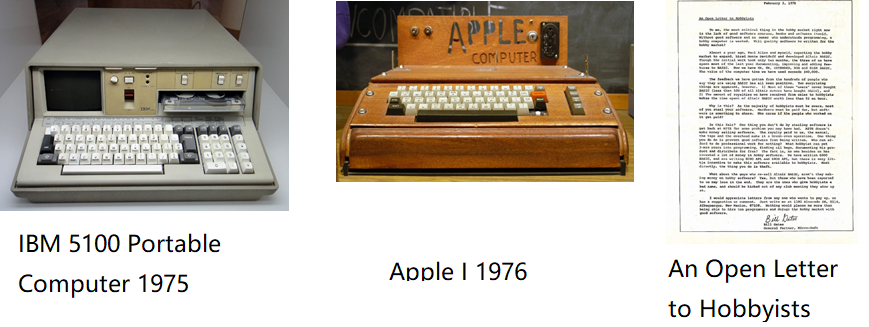
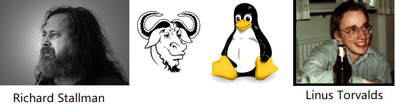

<!DOCTYPE html>
<html lang="en">
  <head>
    <meta charset="utf-8" />
    <meta name="viewport" content="width=device-width, initial-scale=1.0, maximum-scale=1.0, user-scalable=no" />

    <title>reveal-md</title>
    <link rel="shortcut icon" href="./favicon.ico" />
    <link rel="stylesheet" href="./dist/reset.css" />
    <link rel="stylesheet" href="./dist/reveal.css" />
    <link rel="stylesheet" href="./dist/theme/black.css" id="theme" />
    <link rel="stylesheet" href="./css/highlight/base16/zenburn.css" />


  </head>
  <body>
    <div class="reveal">
      <div class="slides"><section  data-markdown><script type="text/template"># 开源的前世今生

</script></section><section  data-markdown><script type="text/template">
## 开源出现之前

* 出于教学与学术目的，交流各种源代码
    * 大型机、中型机、小型机的时代，大多数个人都买不起计算机
    * 有能力购买计算机的机构、大学，都聚集了大量的科研人员
    * 代码的交流，就像学术交流一样，毫不考虑挣钱的事情


</script></section><section  data-markdown><script type="text/template">
## 黑客伦理

* 对计算机的访问（以及任何可能帮助你认识我们这个世界的事物）应该是不受限制的、完全的。任何人都有动手尝试的权利！
* 所有的信息都应该可以自由获取。
* 不迷信权威——促进分权。
* 评判黑客的标准应该是他们的技术，而不是那些没有实际用途的指标，比如学位、年龄、种族或职位。
* 你可以在计算机上创造艺术与美。
* 计算机可以让你的生活更美好。
* 就像阿拉丁神灯，你可以让它听从你的召唤。

</script></section><section  data-markdown><script type="text/template">
## 商业“魔头”现身

* 微型计算机、个人电脑开始兴起，普通玩家之间，也会无偿的交换盗版拷贝
* 1976 年，比尔盖茨发表著名的《写给电脑爱好者的公开信》，倡导版权与利益。而且愤怒的将那些免费复制软件的家伙，称之为：窃贼！
    * 有谁会在没有任何报酬的情况下来做这些专业的工作？什么样的爱好者可以为他的产品投入三个人年的开发时间，并且发现所有的错误、编写文档以及免费发布这个产品？
* 众多企业出于商业目的，封闭代码，出售拷贝 —— 软件行业兴起！



</script></section><section  data-markdown><script type="text/template">
## 黑客的愤怒 / 只是为了好玩

* UNIX 纷纷闭源，商业公司纷纷成立
    * Novell owns AT&T‘s Unix：IBM-AIX、SGI-IRIX、SCO UNIX、HP-UX、SUN-Solaris
    * Berkley（BSD）：SunOS、Ultrix、NetBSD、DEC-OSF、NeXTSTEP、Mac OS X
    * 这些 UNIX，收费昂贵、互不兼容、而且闭源，令人抓狂，令黑客们愤怒！
* GNU/Linux 的崛起
    * Richard Stallman 在 1985 年发表了 GNU 宣言，并于 1989 年起草了 GPL，提出了 Copyleft 的概念。Emacs、GCC 等工具纷纷问世
    * GNU： GNU’s Not Unix
    * 1990 年， Linus Torvalds 在芬兰赫尔辛基大学读书期间，开始开发 Linux，1991 年发布最初版本，并飞速发展至今
    * BSD 家族由于受到 AT&T 以及后来 Novell 的诉讼，发展缓慢。FreeBSD 始于 1993 年



</script></section><section  data-markdown><script type="text/template">
## 一些不可思议的事情

* Linux 1991 年发布第一个开源版本
* 通过互联网聚集了大量的志愿者，没有严格的质量标准，没有强有力的机构协调管理
* 最简策略：每周发布，然后接受反馈
* 到 1993 年底，Linux 在稳定性与可靠性上，已经与很多商业 UNIX 不相上下，并能支持比商业 UNIX 多得多的软件
* 大多数小型 UNIX 供应商倒闭
* 至今：Linux 已经大行于天下

</script></section><section  data-markdown><script type="text/template">
## 初步的观察、思考与总结

* Eric Steven Raymond ：《大教堂与集市》
* 1997年5月27日发表首次公开发表
* 1999年由O’Reilly出版
* 2014年，中文版被翻译引进中国
* 在开源社区，被誉为“圣经”级的文献


</script></section><section  data-markdown><script type="text/template">
## 后来的故事，我们大家就都知道了

</script></section></div>
    </div>

    <script src="./dist/reveal.js"></script>

    <script src="./plugin/markdown/markdown.js"></script>
    <script src="./plugin/highlight/highlight.js"></script>
    <script src="./plugin/zoom/zoom.js"></script>
    <script src="./plugin/notes/notes.js"></script>
    <script src="./plugin/math/math.js"></script>
    <script>
      function extend() {
        var target = {};
        for (var i = 0; i < arguments.length; i++) {
          var source = arguments[i];
          for (var key in source) {
            if (source.hasOwnProperty(key)) {
              target[key] = source[key];
            }
          }
        }
        return target;
      }

      // default options to init reveal.js
      var defaultOptions = {
        controls: true,
        progress: true,
        history: true,
        center: true,
        transition: 'default', // none/fade/slide/convex/concave/zoom
        plugins: [
          RevealMarkdown,
          RevealHighlight,
          RevealZoom,
          RevealNotes,
          RevealMath
        ]
      };

      // options from URL query string
      var queryOptions = Reveal().getQueryHash() || {};

      var options = extend(defaultOptions, {}, queryOptions);
    </script>


    <script>
      Reveal.initialize(options);
    </script>
  </body>
</html>
